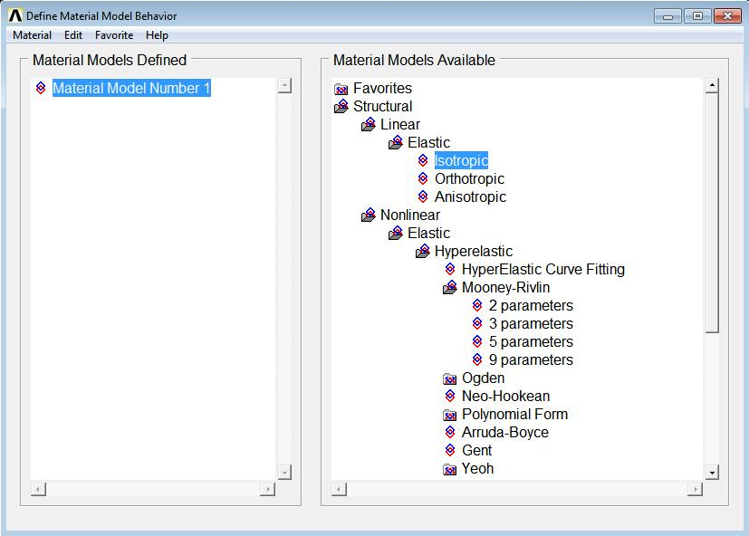
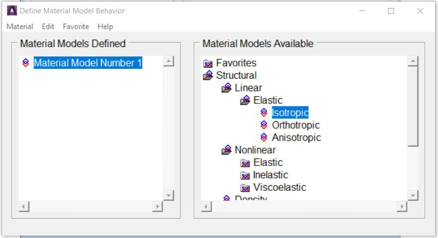
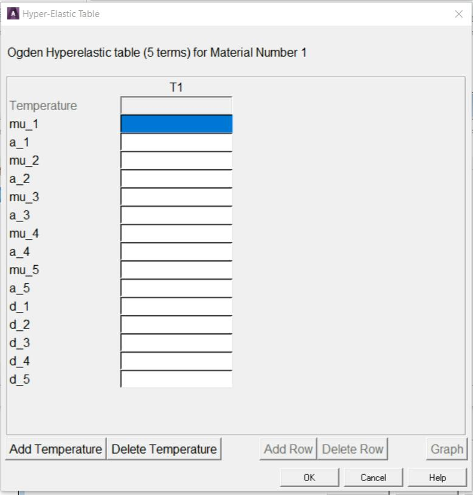
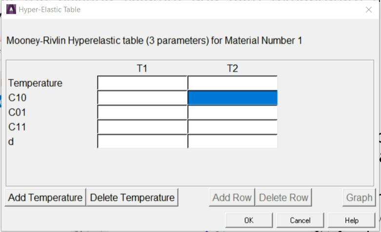
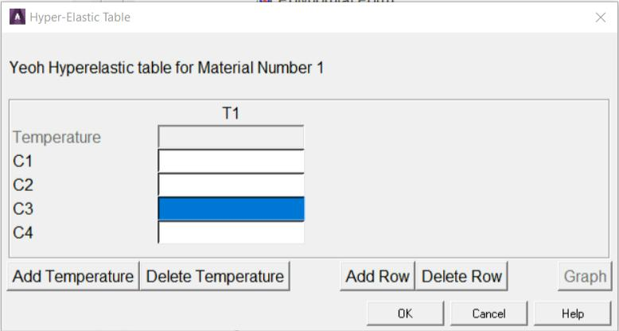
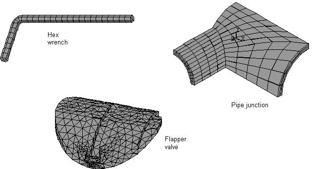
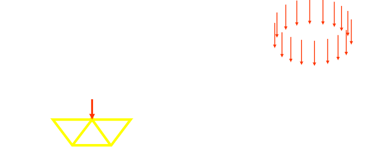

There are three basic choices (Fig. 2.1) to start ANSYS from the
Windows Start Menu.
Fig. 2.1 Three basic choices to start ANSYS
ANSYS Workbench: This is a new GUI with an emphasis on CAD connectivity,
ease of use, and easy management of assembly contact.
ANSYS: This starts ANSYS in the traditional GUI. The program starts
immediately using the settings last changed under the next item, ‘Configure
ANSYS Products’.
Configure ANSYS Products: This choice brings up the ANSYS Launcher.
ANSYS has many finite-element analysis capabilities, ranging from a
simple, linear, static analysis to a complex, nonlinear, transient dynamic
analysis.The process for a typical analysis involves three general tasks:
- Building the model
- Applying loads and obtaining the solution
- Reviewing the results.
2.1.1 Building the Model
Building a finite element model requires more time than any other part
of the analysis. First, specify a jobname and analysis title. Then, use the
preprocessor to define the element type(s), element real constant(s), material
properties and the model geometry.
2.1.1.1 Specifying a Jobname and Analysis Title
This task is not required for an analysis, but is recommended.
Defining the Jobname
The
jobname a name that identifies an analysis job. When the
analyst defines a jobname for an analysis, the jobname becomes the first part
of the name of all files the program creates. The extension or suffix for these
files' names is a file identifier such as .DB. Using a jobname for each analysis,
ensures that no files are overwritten.
If a jobname is not specified, all files receive the name FILE or file,
depending on the operating system. The default jobname can be changed
using
Utility Menu> File> Change Jobname.
Defining an Analysis Title
Utility Menu> File> Change Title defines a title for the analysis. The
program includes the title on all graphics displays and on the solution output.
Defining Units
The program does not assume a system of units for the analysis. Any
system of units can be used so long as the same system is used for all the
data entered.
2.1.1.2 Defining Element Types
The element library contains more than 150 different element types.
Each element type has a unique number and a prefix that identifies the
element category: PLANE182, SOLID185, BEAM188, ELBOW290, and so on.
The element type determines, among other things:
- degree-of-freedom set
- Whether the element lies in 2-D or 3-D space.
BEAM188, for example, has six structural degrees of freedom (UX, UY,
UZ, ROTX, ROTY, ROTZ), is a line element, and can be modeled in 3-D
space. User must be in the general preprocessor to define element types.
While defining the actual elements, point to the appropriate type reference
number using the
Main Menu> Preprocessor> Modeling> Create>
Elements> Elem Attributes.
2.1.1.3 Defining Element Real Constants
Element real constants are properties that depend on the element
type, such as the cross-sectional properties of a beam element. Not all
element types require real constants, and different elements of the same type
may have different real constant values.
As with element types, each set of real constants has a reference
number, and the table of reference number versus real constant set is called
the real
constant table. While defining the elements, point to the appropriate
real constant reference number using
Main Menu> Preprocessor>
Modeling> Create> Elements> Elem Attributes.
2.1.1.4 Defining Material Properties
Most element types require material properties. Depending on the
application, material properties can be linear or nonlinear. As with element
types and real constants, each set of material properties has a material
reference number. The table of material reference numbers versus material
property sets is called the material table. Within one analysis, there may be
multiple material property sets. The program identifies each set with a unique
reference number.
Linear Material Properties
Linear material properties can be constant or temperature-dependent,
and isotropic or orthotropic. Use
Main Menu> Preprocessor> Material
Props> Material Models to define constant material properties.
Also specify the appropriate property label; for example EX, EY, EZ for
Young's modulus, KXX, KYY, KZZ for thermal conductivity, and so forth. For
isotropic material it is necessary to define only the X-direction property; the
other directions default to the X-direction value.
Besides the defaults for Y- and Z-direction properties (which default to
the X-direction properties), other material property defaults are built in to
reduce the amount of input. For example, Poisson's ratio (NUXY) defaults to
0.3 and shear modulus (GXY) defaults to EX/2(1+NUXY).
The analyst can choose constant, isotropic, linear material properties
from a material library available through the GUI. Young's modulus, density,
coefficient of thermal expansion, Poisson's ratio, thermal conductivity and
specific heat are available for 10 materials in four unit systems.
Material Model Interface
The program GUI includes an intuitive hierarchical tree structure
interface for defining many material models. A logical top-down arrangement
of material categories guides in defining the appropriate model for the
analysis.
Accessing the Material Model Interface
Access the material model interface via
Main Menu> Preprocessor>
Material Props> Material Models. The
Define Material Model
Behavior dialog box appears, which originally displays the top level of the
tree structure, as shown in Fig. 2.2.

Fig. 2.2 Material Model Interface Initial Screen
Choosing Material Behavior
The
Material Models Available window on the right displays a list of
material categories. If a category is preceded by a folder icon, there are
subcategories available under the main category. On double-clicking on the
category, the subcategories appear indented, and below the category as
shown in Fig. 2.3.

Fig. 2.3 Material Model Interface Tree Structure
For example, under Structural are categories Linear, Nonlinear, and
others. The models are further categorized so that the analyst will eventually
see a vertical list of material property sets or material models that are
included under that category. Once it is decided which material property set
or model will be used, then choose it by double-clicking on the item. A dialog
5
box appears that prompts for the required input data for that particular
model or property set.
Entering Material Data
Included in a data input dialog box is a table whose rows and columns
can be altered depending on the requirements of the specific material
property or model chosen. A typical data input dialog box is shown in Fig. 2.4.

Fig. 2.4 A Data Input Dialog Box
There are two interaction areas within a material data input dialog box:
the data input table, and a series of action buttons that appear at the bottom.
Depending on the material item defined, the labels in the table vary, as do
the number of rows and columns that appear initially. The material item also
dictates the number of rows and columns that are allowed to be added or
deleted. In most cases, the columns represent temperatures, and the rows
represent data values.
Temperature Dependent Data
Initially, the table is set up for temperature independent data so the
temperature field is grayed out. At this point, should the analyst decide to
enter data for various temperatures, s/he can quickly add columns of text
fields for the data representing each temperature. The temperature
dependent data can be added or deleted at any time. There is no necessity
to predetermine if the data should be temperature dependent.
Adding and Deleting Columns
In order to add a column, position the text cursor in any field in the
existing column, then click on the Add Temperature button. A new column
appears to the right of the existing column, and both temperature fields
become active, as shown in Fig. 2.5.

Fig. 2.5 Data Input Dialog Box - Added Column
Then enter the two temperatures and the associated data in the rows.
More temperature columns can be added, as needed, by following the same
procedure. Insert columns between existing columns by clicking the text
cursor in a field within a column that is to the left of where it is nesessary to
insert the new column, then clicking on the
Add Temperature button. A scroll
bar appears across the bottom of the table when the number of columns
exceeds the width of the dialog box.
Adding and Deleting Rows
It may be necessary to add another row of constants or other data for
a specific temperature. Then add or delete rows in a similar way as is
described above for adding or deleting columns. In order to add a row, click
the text cursor in any field in an existing row, then click on the
Add Row (or
Add Point) button. A new row appears beneath the existing row, as shown
in Fig. 2.6.

Fig. 2.6 Data Input Dialog Box - Added Row
More rows can be added, as needed, by following the same procedure.
Insert rows between existing rows by positioning the text cursor in a field in
the top row, then clicking on the Add Row (or Add Point) button.
A vertical scroll bar appears in the table when the number of rows exceeds
the height of the dialog box.
Entering/Editing Data in Text Fields
When a data dialog box first appears, one of the text fields is
selected (black highlight), meaning that the field is ready to accept and display
data as the analyst types. The arrow keys can be used to move the selection status
to other text fields. Also, pressing the Tab key allows to move the selection status
to the text field positioned to the right of the field that is currently selected.
When the analyst starts typing within a text field, the highlight is
replaced by the characters that are typed. The left and right arrow keys can be used
to position the text cursor anywhere within the field should it be necessary to replace
or delete characters in that field.
In order to edit data, first select the text field either by clicking on
the field, or using the arrow keys to move the selection status to the particular field.
Logging/Editing Material Data
The Material Models Defined window displays a log
of each material model specified. After OK is chosen in the data input dialog box, this
window displays a folder icon, and Material Model Number #,
followed by the properties defined for this model. Additional models can be defined with
unique numbers by choosing Material> New Model, then
typing a new number in the Define Material ID dialog box.
On double-clicking on any material model or property, the associated data input dialog
box appears where the data can be edited, if chosen.
Using Material Library Files
Although material properties can be defined separately for each finite element
analysis, the analyst can also store a material property set in an archival material
library file, then retrieve the set and reuse it in multiple analyses. Each material
property set has its own library file. The material library files also enable several
users to share commonly used material property data.
2.1.1.5 Creating the Model Geometry
Once material properties are defined, the next step in an analysis is
generating a finite element model - nodes and elements - that adequately describes the
model geometry. Figure 2.7 shows some sample finite element models.

Fig. 2.7 Sample Finite Element Models
There are two methods to create the finite element model: solid
modeling and direct generation. In solid modeling,
the analyst describes the geometric shape of model, then instructs the program to
automatically mesh the geometry with nodes and elements.
The size and shape in the elements that the program creates can be controlled.
In direct generation, s/he ‘manually’ defines the
location of each node and the connectivity of each element. Several convenience
operations, such as copying patterns of existing nodes and elements, symmetry
reflection, etc. are available.
2.1.2 Applying Loads and Obtaining the Solution
In this step, the SOLUTION processor defines the analysis type and
analysis options, apply loads, specify load step options, and initiate the finite
element solution. Loads can also be applied via the PREP7 preprocessor.
2.1.2.1 Specifying the Analysis Type and Analysis Options
Specify the analysis type based on the loading conditions and the
response to be calculated. For example, if natural frequencies and mode shapes
are to be calculated, choose a modal analysis. The following analysis types can be
performed in the program: static (or steady-state), transient, harmonic, modal,
spectrum, buckling, and substructuring.
Analysis options allows the analyst to customize the analysis type.
Typical analysis options are the method of solution, stress stiffening on or off,
and Newton-Raphson options.
Use Main Menu> Preprocessor> Loads> Analysis Type> New Analysis
or Main Menu> Preprocessor> Loads> Analysis Type> Restart
to define the analysis type and analysis options.
The analyst can specify either a new analysis or a restart, but a new a
analysis is the norm in most cases. A multiframe restart that allows to restart an
analysis at any point is available for static and transient analyses. The analysis
type and analysis options cannot be changed after the first solution.
After the analysis type and analysis options are defined, the next step
is to apply loads. Some structural analysis types require other items to be defined
first, such as master degrees of freedom and gap conditions.
2.1.2.2 Applying Loads
The word loads as used in ANSYS includes
boundary conditions (constraints, supports, or boundary field specifications) as well
as other externally (Fig. 2.8) and internally applied loads. Loads are divided into
following categories:
- DOF Constraints
- Forces
- Surface Loads
- Body Loads
- Inertia Loads
- Coupled-field Loads

Fig. 2.8 External Loads
Most of these loads can be applied either on the solid model
(keypoints, lines, and areas) or the finite element model (nodes and elements). Two
important load-related terms need to be known are load step and substep.
A load step is simply a configuration of loads for
which a solution is to be obtained. In a structural analysis, for example, the
analyst may apply wind loads in one load step and gravity in a second load step.
steps are also useful in dividing a transient load history curve into several segments.
Substeps are incremental steps taken
within a load step. They are mainly used for accuracy and convergence purposes
in transient and nonlinear analyses. Substeps are also known as time steps
- steps taken over a period of time.
The program uses the concept of time
in transient analyses as well as static (or steady-state) analyses. In a transient
analysis, time represents actual time, in seconds, minutes, or hours. In a static or steady-state analysis, time simply acts as a counter to identify load steps and substeps.
Loads and boundary conditions can be applied in both the Preprocessor
(Main Menu > Preprocessor > Loads > Define Loads > Apply),
and the Solution processor (Main Menu > Solution > Define Loads > Apply).
- Select the kind of constraint to be applied.
- Select the geometric entity on which it is to be applied.
- Enter the value and direction for it.
There is no modify command for loads and B.C.’s. If a mistake is made simply
apply it again with a new value (the old one will be replaced if it’s on the same entity),
or delete it and reapply it.
Although loads and boundary conditions can be applied to nodes or elements,
it’s generally better to apply all B.C.’s to the geometry. When the solve command is issued,
they will be automatically transferred to the underlying nodes and elements. If B.C.’s are
put on the geometry, that geometry can be remeshed without having to reapply them.
2.1.2.3 Specifying Load Step Options
Load step options are options that the analyst can change from load step
to load step, such as number of substeps, time at the end of a load step, and output
controls. Depending on the type of analysis s/he is doing, load step options may or may
not be required. The analysis procedures in the analysis guide manuals describe the
appropriate load step options as necessary.
2.1.2.4 Initiating the Solution
Use Main Menu> Solution> Solve> Current LS
to initiate solution calculations. When this command is issued, the program takes model
and loading information from the database and calculates the results. Results are written
to the results file (Jobname.RST, Jobname.RTH, or Jobname.RMG) and also to the database.
The only difference is that only one set of results can reside in the database at one
time, while ANSYS can write all sets of results (for all substeps) to the results file.
Multiple load steps can be solved in a convenient manner using:
Main Menu> Solution> Solve> From LS Files.
2.1.3 Reviewing the Results
After the solution has been calculated, use the postprocessors to review the
results. Two postprocessors are available: POST1 and POST26.
Use POST1, the general postprocessor, to review
results at one substep (time step) over the entire model or selected portion of the model.
The GUI path for entering POST1 is Main Menu> General Postproc,
valid only at the Begin level. The analyst can obtain contour displays, deformed shapes, and tabular
listings to review and interpret the results of the analysis. POST1 offers many other capabilities,
including error estimation, load case combinations, calculations among results data, and path operations.
Use POST26, the time-history postprocessor, to review
results at specific points in the model over all time steps. The GUI path for entering POST26
is Main Menu> TimeHist Postpro, valid only at the Begin level.
Graph plots of results data versus time (or frequency) and tabular listings can be obtained.